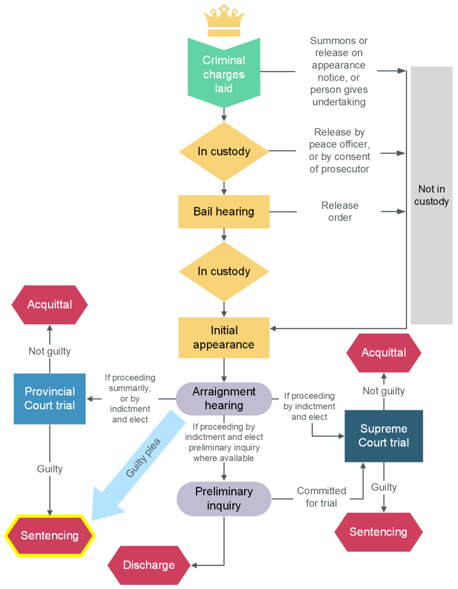

Sentencing
7.1 Introduction
Reading
- Textbook, pp 975-977, 981-983, 986-997(optional)
Any person accused of a crime who is found guilty after a trial, or who pleads guilty to an offence, will be sentenced by the trial judge.
The starting point for the range of possible sentences is the Criminal Code. The Code will specify a maximum sentence for the offence in question (this is the "liable to" part) and will sometimes set out a minimum penalty as well.
Within the range of possible sentences, the sentencing judge (who is the same as the trial judge) must fix a fit sentence that is proportionate to the gravity of the offence and the blameworthiness of the offender. The judge is guided by the general principles of sentencing found in Part XXIII of the Code and in the case law. The trial judge will typically consider the range of sentences imposed in other similar cases as well.
For most offences, sentencing judges exercise their discretion within this range and are generally afforded deference by appeals courts, unless there is “an error in principle, failure to consider a relevant factor, or an overemphasis of the appropriate factors” such that the sentence is “demonstrably unfit” (R. v. M. (C.A.), 1996 CanLII 230 (SCC)).
There is also the possibility that an Accused may challenge the sentence set by Parliament as infringing their section 12 right under the Charter to be free from cruel and unusual punishment. Mandatory minimum sentences of imprisonment, for example, are often challenged until there is a definitive ruling from the Supreme Court of Canada either upholding or striking down such a sentence for a given offence.
As a general rule, the jury has no role to play in sentencing the Accused. In a jury trial the judge fixes the appropriate sentence. The one exception to this rule is where a person is convicted of second degree murder, an offence that carries a mandatory life sentence, with a minimum period of parole ineligibility of between 10 and 25 years. In such cases, the jury is asked to recommend a period of parole ineligibility. If the jury makes a recommendation, the judge will consider it, but has the ultimate authority for the decision.
Both the Crown and the Accused can introduce evidence at the sentencing hearing. This evidence might include the criminal record of the Accused, a victim impact statement (see section 722 of the Criminal Code), letters of reference or support, a statement by the Accused, or evidence about attempts at rehabilitation made by the Accused. If the Crown wishes to prove additional facts not already on the trial record that might be relevant to sentencing, the Crown must prove these facts.
Sometimes the defence and the Crown make a joint submission as to the appropriate sentence, usually as part of a plea negotiation. The judge is not obliged to accept this recommendation and may choose to award a more or less severe sentence.
7.2 Purpose and Objectives
A key aspect of determining a “fit” sentence is to ensure that it satisfies the purposes and objectives of sentencing that have been codified in the Criminal Code.
ss. 718 to 718.2 of the Criminal Code
Purpose
718 The fundamental purpose of sentencing is to protect society and to contribute, along with crime prevention initiatives, to respect for the law and the maintenance of a just, peaceful and safe society by imposing just sanctions that have one or more of the following objectives:
- to denounce unlawful conduct and the harm done to victims or to the community that is caused by unlawful conduct;
- to deter the offender and other persons from committing offences;
- to separate offenders from society, where necessary;
- to assist in rehabilitating offenders;
- to provide reparations for harm done to victims or to the community; and
- to promote a sense of responsibility in offenders, and acknowledgment of the harm done to victims or to the community.
Fundamental principle
718.1 A sentence must be proportionate to the gravity of the offence and the degree of responsibility of the offender.
Other sentencing principles
718.2 A court that imposes a sentence shall also take into consideration the following principles:
(a) a sentence should be increased or reduced to account for any relevant aggravating or mitigating circumstances relating to the offence or the offender, and, without limiting the generality of the foregoing,
- (i) evidence that the offence was motivated by bias, prejudice or hate based on race, national or ethnic origin, language, colour, religion, sex, age, mental or physical disability, sexual orientation, or gender identity or expression, or on any other similar factor,
- (ii) evidence that the offender, in committing the offence, abused the offender’s spouse or common-law partner,
- (ii.1) evidence that the offender, in committing the offence, abused a person under the age of eighteen years,
- (iii) evidence that the offender, in committing the offence, abused a position of trust or authority in relation to the victim,
- (iii.1) evidence that the offence had a significant impact on the victim, considering their age and other personal circumstances, including their health and financial situation,
- (iv) evidence that the offence was committed for the benefit of, at the direction of or in association with a criminal organization,
- (v) evidence that the offence was a terrorism offence, or
- (vi) evidence that the offence was committed while the offender was subject to a conditional sentence order made under section 742.1 or released on parole, statutory release or unescorted temporary absence under the Corrections and Conditional Release Act shall be deemed to be aggravating circumstances;
(b) a sentence should be similar to sentences imposed on similar offenders for similar offences committed in similar circumstances;
(c) where consecutive sentences are imposed, the combined sentence should not be unduly long or harsh;
(d) an offender should not be deprived of liberty, if less restrictive sanctions may be appropriate in the circumstances; and
(e) all available sanctions, other than imprisonment, that are reasonable in the circumstances and consistent with the harm done to victims or to the community should be considered for all offenders, with particular attention to the circumstances of Aboriginal offenders.
The Supreme Court of Canada decision in R. v. M. (C.A.), 1996 CanLII 230 (SCC) discusses the purposes and objectives of sentencing. It is helpful to see how they are applied in practice.
Discussion Activity: Purposes and Objectives of Sentencing
Please choose any case that we have studied so far in this course and post a message describing how you think the purposes and principles of sentencing in sections 718 to 718.2 of the Criminal Code should apply in the context of that case. For example, in Keegstra, you may think that General Deterence was an important consideration for the judge when imposing sentence. It is ok to keep it simple. No requirement to comment on another post for this one.
Also, please note that for the Final Exam, you may be asked about some of the principles and purposes of sentencing and will be expected to know them without looking at the Criminal Code.
Answer
R v Mustard (G), 2016 MBCA 40
This case is an appeal from a conviction for manslaughter. The accused, who was confronted by the victim during a fight and was physically outweighed by him, drew a pocket knife and stabbed the victim in the neck, which later led to the victim’s death in hospital. At trial, the accused asked the judge to leave the defence of self-defence with the jury, but the trial judge refused to do so.
On appeal, the court discussed the “air of reality” test in detail and concluded that the trial judge had erred in law by failing to allow the jury to consider the self-defence argument. As a result, the Court of Appeal allowed the appeal and ordered a new trial on the charge of manslaughter.
If the accused were found guilty at the new trial, he would nevertheless face a maximum sentence of life imprisonment pursuant to s. 236 of the Criminal Code. However, no minimum sentence is prescribed for manslaughter involving a non-firearm weapon.
In a jury trial, the judge determines the appropriate sentence by considering the relevant circumstances of the case and applying the purposes and principles of sentencing in criminal law.
Section 718 states that “[t]he fundamental purpose of sentencing is to protect society and to contribute, along with crime prevention initiatives, to respect for the law and the maintenance of a just, peaceful and safe society by imposing just sanctions that have one or more of the following objectives ...”
Under ss. 718.1 and 718.2, the main sentencing principles include:
- A sentence must be proportionate to the gravity of the offence and the degree of responsibility of the offender.
- A sentence should be increased or reduced to account for any relevant aggravating or mitigating circumstances relating to the offence or the offender.
- A sentence should be similar to sentences imposed on similar offenders for similar offences committed in similar circumstances.
- Where consecutive sentences are imposed, the combined sentence should not be unduly long or harsh.
- An offender should not be deprived of liberty if less restrictive sanctions may be appropriate in the circumstances.
- All available sanctions other than imprisonment that are reasonable in the circumstances, and consistent with the harm done to victims or the community, should be considered for all offenders, with particular attention to the circumstances of Aboriginal offenders.
In the present case, the incident arose from a late-night fight involving intoxication. The victim initiated the confrontation, physically outmatched the accused, and the accused immediately regretted his actions once the victim was wounded.
Considering these factors, even if the self-defence claim were ultimately rejected, the accused should receive neither the maximum sentence nor an acquittal. Instead, the sentence should be proportionate to the gravity of the offence and the degree of the accused’s moral blameworthiness, as determined by the judge at the new trial. Furthermore, sentences imposed on similar offenders for similar offences committed in comparable circumstances should also be considered to ensure consistency in sentencing.
Study Tips
- What are the main principles of sentencing? What are the main purposes?
- Think about the principles and purposes you listed above and what they mean.
7.3 Constitutional Considerations
As with other aspects of Canadian criminal law, sentencing must comply with the Canadian Charter of Rights and Freedoms. Section 12 of the Charter provides that
everyone has the right not to be subjected to any cruel and unusual treatment or punishment.
Most notably, this provision has been used, successfully in some cases, to challenge the imposition of mandatory minimum sentences of imprisonment (“MMPs”) for some offences. MMPs are the minimum sentence that a judge must impose for a given offence.
MMPs and Section 12 of the Charter
In November 2012, the Safe Streets and Communities Act implemented a whole scheme of MMPs that applied to most drug offences under the Controlled Drugs and Substances Act. For example:
- Trafficking a Schedule 1 drug attracted a minimum of 1 year of jail, if the Accused had a previous trafficking conviction within the preceding 10 years, or served a term of imprisonment within the preceding 10 years
- Running a methamphetamine or ecstasy lab attracted a 2 year minimum sentence
- Running a 500+ plant marijuana grow operation in a rental property resulted in a 3 year minimum sentence
- Importing or exporting more than a kilogram of a Schedule 1 drug attracted a 2 year minimum sentence
Many of these MMPs were “struck down” by the courts over the first few years. The following cases of R. v. Nur, 2015 SCC 15 and R. v. Lloyd, 2016 SCC 13 are two of these decisions.
Read R. v. Nur from paragraphs 38 to 46.
In R. v. Nur, the Supreme Court of Canada expanded on the test for when an MMP will violate s.12 of the Charter. At paragraph 46 (emphasis added):
[46] To recap, a challenge to a mandatory minimum sentencing provision on the ground it constitutes cruel and unusual punishment under s. 12 of the Charter involves two steps. First, the court must determine what constitutes a proportionate sentence for the offence having regard to the objectives and principles of sentencing in the Criminal Code. Then, the court must ask whether the mandatory minimum requires the judge to impose a sentence that is grossly disproportionate to the fit and proportionate sentence. If the answer is yes, the mandatory minimum provision is inconsistent with s. 12 and will fall unless justified under s. 1 of the Charter.
Read R. v. Lloyd from paragraphs 21 to 37.
The Supreme Court of Canada revisited the drug MMPs again in R. v. Lloyd. In R. v. Lloyd, the court paid particular attention to how the MMPs could apply to people of varying levels of moral blameworthiness. At paragraph 35:
[35] I have already said, in light of Nur, the reality is this: mandatory minimum sentences that, as here, apply to offences that can be committed in various ways, under a broad array of circumstances and by a wide range of people are vulnerable to constitutional challenge. This is because such laws will almost inevitably include an acceptable reasonable hypothetical for which the mandatory minimum will be found unconstitutional. If Parliament hopes to sustain mandatory minimum penalties for offences that cast a wide net, it should consider narrowing their reach so that they only catch offenders that merit the mandatory minimum sentences.
7.4 Sentencing Options
All criminal offences have the possibility of imprisonment, and some require it through mandatory minimum penalties of imprisonment. However, there are a range of other sentencing options for most offences that we consider in this topic, with particular attention to conditional sentences of imprisonment (also known as “house arrest”).

Types of sentence available in Canada: BC Sentencing
Not all types of sentence can be imposed for every offence or in every circumstance.
- Absolute discharge: When a person is found guilty or pleads guilty but the judge decides it is not necessary to convict them. The person then has no criminal record. See Criminal Code section 730.
- Conditional discharge: When a person is found guilty or pleads guilty but the judge decides it is not necessary to convict them if they obey the rules (conditions) of a probation order. If they obey all the rules, at the end of their probation they will not have a criminal record. See Criminal Code section 730. Note that a conditional discharge is very different from a conditional sentence.
- Conditional sentence: A jail sentence served in the community. The offender does not live in jail but is supervised by BC Community Corrections. They must follow certain rules (conditions).
-
Suspended sentence and probation: With a suspended sentence, a judge convicts the offender, but suspends sentencing and instead releases the offender on specific conditions for a period of time, as set out in a probation order. This often includes a condition that the offender must report to a probation officer. Other conditions might include:
- Attending alcohol or drug assessment and/or treatment
- Taking programs for anger management or domestic violence
- Not using alcohol or drugs
- Not contacting certain people or being at certain places
- Any other conditions that are appropriate to the crime and your situation
If the offender does not follow the conditions the judge ordered, Crown counsel can apply to the Court to revoke the suspended sentence and impose a different sentence.
-
Fine: If the offender is given a fine, they will be given time to pay it. If it is not paid within that time, they could end up in custody or there could be other impacts such as being unable to renew their driver’s licence.
- Custodial sentence: This is where the offender serves a period of time in jail, either a provincial correctional centre or a federal penitentiary.
- Intermittent custodial sentence: For sentences of 90 days or less, a judge may order an intermittent custodial sentence. This means the offender does not serve all the days of the sentence at the same time. For example, they may serve the sentence on weekends.
- Victim fine surcharge: The offender may be required to pay a surcharge or fee, called the victim surcharge, that goes toward helping victims of crime. This surcharge will be added by the court registry unless the judge says the offender does not have to pay it (exempts them from paying it) or reduces the amount. The judge may order that the offender pay no victim surcharge or that a reduced amount must be paid if the full amount would cause undue hardship because of financial circumstances. The judge may also decrease, increase or order no payment based on the circumstances of the offence and the offender's responsibility for it.
In R. v. Proulx, 2000 SCC 5, the Supreme Court of Canada explains the significance of the conditional sentence of imprisonment and sets out the test for when it is an available and appropriate sentence. Note that conditional sentences were no longer available for many drug trafficking offences since the passing of the Safe Streets and Community Act discussed in the previous topic, however these prohibitions on CSOs were later overturned as unconstitutional.
R. v. Proulx, headnote
A conditional sentence should be distinguished from probationary measures. Probation is primarily a rehabilitative sentencing tool. By contrast, Parliament intended conditional sentences to include both punitive and rehabilitative aspects. Therefore, conditional sentences should generally include punitive conditions that are restrictive of the offender's liberty. Conditions such as house arrest should be the norm, not the exception.
No offences are excluded from the conditional sentencing regime except those with a minimum term of imprisonment, nor should there be presumptions in favour of or against a conditional sentence for specific offences.
Section 742.1 of the Code lists four criteria that a court must consider before deciding to impose a conditional sentence:
- (1) the offender must be convicted of an offence that is not punishable by a minimum term of imprisonment;
- (2) the court must impose a term of imprisonment of less than two years;
- (3) the safety of the community would not be endangered by the offender serving the sentence in the community; and
- (4) a conditional sentence would be consistent with the fundamental purpose and principles of sentencing set out in ss. 718 to 718.2.
Discussion Activity: Sentencing Options
The sentencing options for a given criminal offence can be difficult to determine because they require consulting multiple Criminal Code provisions, including those mentioned in the reading above. A quick way to determine the available sentencing options for a given offence is to consult the sentencing tables at the end of an annotated Criminal Code.
Please post a message identifying a simple Criminal Code offence and listing the sentencing options that are available for it, including which are mandatory and which are optional. For example, is a CSO available? Probation? Jail? a Discharge?
No requirement for this one to comment on another post.
Note that for the Final Exam, you may be asked about sentencing options and will be expected to know them without looking at the Criminal Code. This includes the types of sentences and what they are, but not specifics such as what sentences are available to specific Code offences.
7.5 Aboriginal Offenders
Disproportionate incarceration rates of Aboriginal offenders are a concern of the Canadian criminal justice system. The Criminal Code and the Supreme Court of Canada have acknowledged this issue. The general approach to address this problem has been to provide Aboriginal offenders with special consideration at sentencing.
Section 718.2(e) of the Criminal Code states that
all available sanctions other than imprisonment that are reasonable in the circumstances should be considered for all offenders, with particular attention to the circumstances of aboriginal offenders.
In R. v. Gladue, 1999 CanLII 679 (SCC), the Supreme Court of Canada recognized the problem of disproportionate incarceration of Aboriginal offenders and established the approach that should be taken in sentencing such offenders, citing section 718.2(e) of the Criminal Code.
Over a decade after Gladue, the Supreme Court of Canada again weighed in on the issue of disproportionate incarceration of Aboriginal offenders in R. v. Ipeelee, 2012 SCC 13.
7.6 Victims
The impact of crime on victims is an important consideration in the sentencing process. In Canada, victims have a limited ability to participate in sentencing by providing a victim impact statement. However, the role of victims in Canada’s criminal justice system was enhanced in 2015 by the Victims Bill of Rights Act.
Victim Impact Statements
The main role of victims during sentencing is to provide information to the sentencing judge about the impact of the offence on them through a victim impact statement. This document may be submitted in written form or read aloud during the sentencing hearing.
Sections 722 to 722.2 of the Criminal Code set out the “victim impact statement” regime that is applicable at sentencing, including the definition of “victim” and the process to be followed.
Victim impact statement
722(1) When determining the sentence to be imposed on an offender or determining whether the offender should be discharged under section 730 in respect of any offence, the court shall consider any statement of a victim prepared in accordance with this section and filed with the court describing the physical or emotional harm, property damage or economic loss suffered by the victim as the result of the commission of the offence and the impact of the offence on the victim.
Community impact statement
722.2(1) When determining the sentence to be imposed on an offender or determining whether the offender should be discharged under section 730 in respect of any offence, the court shall consider any statement made by an individual on a community’s behalf that was prepared in accordance with this section and filed with the court describing the harm or loss suffered by the community as the result of the commission of the offence and the impact of the offence on the community.
Victims Bill of Rights Act
Canadian Victims Bill of Rights (Macdonald-Laurier Institute, 2014)
This Commentary provides an evaluation of the [then] proposed Victims Bill of Rights (a key part of Bill C-32), and recommendations aimed at ensuring that it meets the objective of meaningfully enhancing the rights of victims within the criminal justice system. Part 2 provides a synopsis of victimization in Canada, including both self-reported crime and police-reported crime. Groups of victims suffering disproportionately high levels of violent victimization are highlighted and reasons for under-reported crime related to the justice system are identified. Part 3 summarizes the key components of the Canadian Victims Bill of Rights. Part 4 evaluates the legislation as it was proposed and recommends several amendments that could have been made to it to better respond to victims and ensure its effectiveness.
Voices of Victims
The victims of crime are often ignored in the study of criminal law, but their suffering and the impact of crime on them is to be considered as part of the sentencing process. These brief videos introduce you to a few examples of victims of crime in Canada who speak personally about how they have been affected by sexual assault and murder. Note that you will not be tested on the content of these videos.
Unit 7 Short Quiz
Quiz
-
Which of the following is not an objective of sentencing set out in section 718 of the Criminal Code?
- Denunciation
- Rehabilitation
- Vengeance
- Deterrence
-
A sentencing judge is required to accept a joint submission made by the Crown prosecutor and defence counsel.
- True
- False
-
What is the Charter provision that has been used to challenge mandatory minimum penalties of imprisonment?
- Section 718
- Section 8
- Section 1
- Section 12
-
What is the test affirmed by the Supreme Court of Canada in R. v. Ferguson, [2008] 1 S.C.R. 96, 2008 SCC 6 for when a mandatory minimum sentence of imprisonment violates the Charter provision in question 3?
- “The test for whether a particular sentence constitutes cruel and unusual punishment is whether the sentence is grossly disproportionate”
- “The test for whether a particular sentence constitutes cruel and unusual punishment is whether the sentence is demonstrably unfit”
- “The test for whether a particular sentence constitutes cruel and unusual punishment is whether the sentence is unreasonable in all the circumstances”
- “The test for whether a particular sentence constitutes cruel and unusual punishment is whether the sentence is unacceptable due to the suffering, pain, or humiliation it inflicts on the person subjected to it”
-
Probation orders may be made in addition to a fine or a term of imprisonment not exceeding two years.
- True
- False
-
When were conditional sentences of imprisonment added to the Criminal Code?
- 1867
- 1982
- 1985
- 1996
-
In R. v. Gladue, [1999] 1 SCR 688, the Supreme Court of Canada stated that it should be assumed that Aboriginal offenders will receive a more lenient sentence than non-Aboriginal offenders due to the unique systemetic or background factors which may have played a part in bringing the particular Aboriginal offender before the courts.
- True
- False
-
What section of the Criminal Code recognizes the ability of a victim to submit a victim impact statement for sentencing purposes?
- 12
- 22
- 718
- 722
-
What percentage of the Canadian population (ages 15 years and older) report being the victims of violent crime annually?
- 2%
- 6%
- 10%
- 25%
-
Which of the following are changes proposed to victim impact statements in Bill C-32 (Victims Bill of Rights Act)?
- Increasing the options for delivering victim impact statements
- Creation of a new standardized form for victim impact statements
- Guidance to sentencing judges to disregard any portions not relevant to “physical or emotional harm, property damage or economic loss...and impact”
- All of the above
- None of the above
Textbook Summary: pp 975-977, 981-983
Chapter 20 SENTENCING AND PUNISHMENT
I. THE SENTENCING FRAMEWORK
Virtually every offence creating provision also includes an accompanying subsection that specifies the minimum (if there is one) or maximum punishment relating to that offence. General issues surrounding sentencing are dealt with in part XXIII of the Criminal Code.
The Criminal Code provides judges with a breadth of sentencing options. At one end of the spectrum are absolute and conditional discharges (governed by s 730), whereby, though there is a finding of guilt, no conviction is registered. Judges can also make orders for probation (s 731), require restitution (s 738), issue fines (s 734), and impose a period of imprisonment of less than two years to be served in the community (a “conditional sentence,” governed by s 742.1). Of course, judges may also impose periods of incarceration.
In 1996, Parliament enacted Bill C-41, An Act to amend the Criminal Code (sentencing) and other Acts in consequence thereof, SC 1995, c 22. It came into force as the new part XXIII of the Criminal Code. This reform was the result of years of study and effort. A central feature of Bill C-41 was the provision of guidance on the purposes of sentencing and principles that judges should use in arriving at a fit sentence.
A. PARLIAMENTARY GUIDANCE
Further to ss 718-722, the following 718.0x:
718.0x
Objectives — offences against children
718.01 When a court imposes a sentence for an offence that involved the abuse of a person under the age of eighteen years, it shall give primary consideration to the objectives of denunciation and deterrence of such conduct.
Objectives — offence against peace officer or other justice system participant
718.02 When a court imposes a sentence for an offence under subsection 270(1), section 270.01 or 270.02 or paragraph 423.1(1)(b), the court shall give primary consideration to the objectives of denunciation and deterrence of the conduct that forms the basis of the offence.
Objectives — offence against certain animals
718.03 When a court imposes a sentence for an offence under subsection 445.01(1), the court shall give primary consideration to the objectives of denunciation and deterrence of the conduct that forms the basis of the offence.
Objectives — offence against vulnerable person
718.04 When a court imposes a sentence for an offence that involved the abuse of a person who is vulnerable because of personal circumstances — including because the person is Aboriginal and female — the court shall give primary consideration to the objectives of denunciation and deterrence of the conduct that forms the basis of the offence.
A central motivation for articulating the principles and objectives of sentencing was to provide greater certainty, and even predictability, in the sentencing process. You will note, however, that Parliament indicated no priority in respect of the six sentencing objectives listed in s 718. Although s 718.1 identifies proportionality as the fundamental principle of sentencing, s 718.2 lists a variety of other principles that “[a] court that imposes a sentence shall also take into consideration,” again without explicit priority or ranking.
In cases following the enactment of Bill C-41, the Supreme Court of Canada identified two further parliamentary objectives, beyond certainty and consistency in sentencing, animating the 1996 sentencing reforms. In R. v. Proulx, 2000 SCC 5, a case that also provided guidance for the use of conditional sentences and probation orders, Lamer CJ explained that “[b]y passing [Bill C-41], Parliament has sent a clear message to all Canadian judges that too many people are being sent to prison” (at para 1).
B. JUDICIAL DISCRETION
This wide ambit for judicial discretion arises from two sources.
First, there is a vast array of factors that can bear on determining a proportionate sentence in a given case, and for a particular offender.
In recent years, the Supreme Court has held that “collateral consequences” of criminal behaviour, such as adverse immigration consequences flowing from conviction or punishment (R. v. Pham, 2013 SCC 15) and vigilante action taken against an accused before sentencing (R. v. Suter, 2018 SCC 34), are relevant to determining a fit sentence. Canadian courts have thus adopted the idea that just and fair sentencing is highly individualized, and they have embraced the discretion of sentencing judges as necessary to ensure a proportional and fit sentence.
Second, the meaning, importance, and relative priority of the various sentencing objectives and principles set out in the Criminal Code are subject to significant debate and interpretation in the courts.
R. v. M. (C.A.), 1996 CanLII 230 (SCC)
- [80] However, the meaning of retribution is deserving of some clarification. The legitimacy of retribution as a principle of sentencing has often been questioned as a result of its unfortunate association with “vengeance” in common parlance. ... But it should be clear from my foregoing discussion that retribution bears little relation to vengeance, and I attribute much of the criticism of retribution as a principle to this confusion. As both academic and judicial commentators have noted, vengeance has no role to play in a civilized system of sentencing. ... Vengeance, as I understand it, represents an uncalibrated act of harm upon another, frequently motivated by emotion and anger, as a reprisal for harm inflicted upon oneself by that person. Retribution in a criminal context, by contrast, represents an objective, reasoned and measured determination of an appropriate punishment which properly reflects the moral culpability of the offender, having regard to the intentional risk-taking of the offender, the consequential harm caused by the offender, and the normative character of the offender’s conduct. Furthermore, unlike vengeance, retribution incorporates a principle of restraint; retribution requires the imposition of a just and appropriate punishment, and nothing more.
- [81] Retribution, as well, should be conceptually distinguished from its legitimate sibling, denunciation. Retribution requires that a judicial sentence properly reflect the moral blameworthiness of that particular offender. The objective of denunciation mandates that a sentence should also communicate society’s condemnation of that particular offender’s conduct. In short, a sentence with a denunciatory element represents a symbolic, collective statement that the offender’s conduct should be punished for encroaching on our society’s basic code of values as enshrined within our substantive criminal law. The relevance of both retribution and denunciation as goals of sentencing underscores that our criminal justice system is not simply a vast system of negative penalties designed to prevent objectively harmful conduct by increasing the cost the offender must bear in committing an enumerated offence. Our criminal law is also a system of values. A sentence which expresses denunciation is simply the means by which these values are communicated. In short, in addition to attaching negative consequences to undesirable behaviour, judicial sentences should also be imposed in a manner which positively instills the basic set of communal values shared by all Canadians as expressed by the Criminal Code.
-
[89] In Shropshire [[1995] 4 S.C.R. 227] this Court recently articulated the appropriate standard of review that a court of appeal should adopt in reviewing the fitness of sentence under s. 687(1). In the context of reviewing the fitness of an order of parole ineligibility, Iacobucci J. described the standard of review as follows, at para. 46:
An appellate court should not be given free reign to modify a sentencing order simply because it feels that a different order ought to have been made. The formulation of a sentencing order is a profoundly subjective process; the trial judge has the advantage of having seen and heard all of the witnesses whereas the appellate court can only base itself upon a written record. A variation in the sentence should only be made if the court of appeal is convinced it is not fit. That is to say, that it has found the sentence to be clearly unreasonable.
-
[90] Put simply, absent an error in principle, failure to consider a relevant factor, or an overemphasis of the appropriate factors, a court of appeal should only intervene to vary a sentence imposed at trial if the sentence is demonstrably unfit.
- [91] ... The determination of a just and appropriate sentence is a delicate art which attempts to balance carefully the societal goals of sentencing against the moral blameworthiness of the offender and the circumstances of the offence, while at all times taking into account the needs and current conditions of and in the community. The discretion of a sentencing judge should thus not be interfered with lightly.
- [92] It has been repeatedly stressed that there is no such thing as a uniform sentence for a particular crime. ... Sentencing is an inherently individualized process, and the search for a single appropriate sentence for a similar offender and a similar crime will frequently be a fruitless exercise of academic abstraction. As well, sentences for a particular offence should be expected to vary to some degree across various communities and regions in this country, as the “just and appropriate” mix of accepted sentencing goals will depend on the needs and current conditions of and in the particular community where the crime occurred.